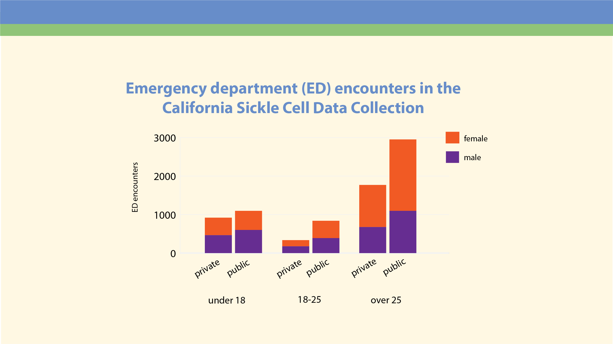

Are socio-economic factors related to emergency department utilization for Californians with sickle cell disease?
<object data="/images/uploads/scd-data-brief-full.pdf" type="application/pdf" width="1200px" height="700px"> <embed src="http://yoursite.com/the.pdf">
</embed> </object>
_Our mission at Tracking California is to share data and information to support communities as they take action to improve health. This data brief is a short summary of an analysis from our Sickle Cell Data Collection program._
In California, people with sickle cell disease (SCD) go to the emergency department (ED) more than twice per year on average, and those with characteristics related to low income and socio-economic status use the ED more frequently. People with fewer means may have significant barriers to receiving quality preventative and supportive care, making their need for ED visits greater.
There are three important pieces of information that can be drawn from this analysis.
- Californians with SCD go to the ED without being admitted to the hospital more than twice per year on average, compared to 0.4 times per year for all Americans
- Children with SCD who are covered by public insurance have more ED encounters on average than those with private insurance
- Californians with SCD are more likely to live in low-income zip codes than other state residents